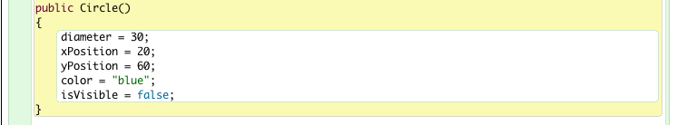

Readme
Assignment 1: This assignment is based on materials contained in the slide decks and labs in the first 4 topics, namely,
- Objects & Classes
- Class Analysis & Refactor
- Object Interaction
- Grouping Objects
Guidelines
Setup
Download the archive assignment-1.zip available here and expand to a directory workspaceBlueJ/assignments/assignment-1.
Your directory structure should be as depicted in Figure 1.
The folder assignments-1 should contain BlueJ projects arrays, notebook ,shapes and strings. See Figure 2.
The projects contain skeleton code which forms the basis of the questions that follow.
Assignment completion guidelines
Question 1 [Marks 7/100]
In this question you will work with the Circle class that you downloaded in the shape project folder int the folder assignment-1.
Task 1
- Modify the default Circle constructor (Figure 1) by using the existing method setState to initialize the Circle object with the existing default values.

Task 2
- Add an overloaded constructor to the Circle class (Figure 2).
- The constructor should have the following signature:
- public Circle(int diameter)
- Initialize the remaining fields in the Circle with the default values present in the existing default Circle constructor. See Figure 1.
- Use the existing method setState to initialize values.
Task 3
- Comment only those parts of Circle that you modify.
Task 4
Write a method in Circle to calculate and return
Task 5
Write a method in Circle to calculate and return
- the circumference of the circle
- public double circumference()
Question 2 [Marks 15/100]
Task 1
Implement a class named Cylinder (see Figure 1), specified as follows:
- The fields are to be
- private int height
- private Circle base
Task 2
Provide a single constructor with the following signature:
- public Cylinder(int height, Circle base)
- Initialize the fields in the constructor.
Task 3
Write a method to calculate and return the
Task 4
Write a method to calculate and return the
- surface area of the cylinder that includes base, top and sides.
- public double surfaceArea()
Task 5
Write a getter (accessor) method to return the diameter of the cylinder
- public double getDiameter()
Task 6
Document the class using Cone as a model
Question 3 [Marks 24/100]
Task 1
Create a class named Cylinder3D.
- The purpose of the class is to display a solid cylinder in three dimensions
Use the supplied classes:
Task 2
Here is a partially documented outline of the class:
/**
* Class to display a solid cylinder in three dimensions
* A cylinder viewed in 3D will appear as elliptical top and bottom
* We choose, arbitrarily, the minor diameter of the ellipse to be half the major diameter
*/
public class Cylinder3D
{
//the basic cylinder
private int diameter;
private int height;
//in 3 D the top and bottom will appear as ellipses
private Ellipse top;
private Ellipse base;
//the wall will appear as a rectangle
private Rectangle wall;
//set the origin (x,y), the top left corner of imaginary rectangle
//enclosing the elliptical top of cylinder
int xPosition;
int yPosition;
public Cylinder3D(int diameter, int height)
{
...
}
private void initialize3D()
{
//choose the origin of the cylinder as viewed in 3D at (0,0)
//Recall that we have arbitrarily decided the minor diameter is half the major diameter
//Note that the origin of the ellipse is top left corner of a containing rectangle
//Therefore the y coord of origin of wall will be diameter/4
top = new Ellipse(...);
wall = new Rectangle(...);
base = new Ellipse(...);
}
public void moveTo(int x, int y)
{
}
}
Question 4 [Marks 12/100]
In the Notebook project.
- Create a Notebook object
- Invoke initializeTestData
- The output should correspond to that shown in Figure 1.
Task 1
Modify the following method in the Notebook class to display the note numbers in addition to the actual note:
- listNotesWhile method illustrated in Figure 2.
Task 2
Modify the following method in the Notebook class to display the note numbers in addition to the actual note:
- listNotesForEach method illustrated in Figure 3.
- Hint: consider use of ArrayList lastIndexOf(Object o). Documentation viewable here
Task 3
Modify the following method in the Notebook class to display the note numbers in addition to the actual note:
- listNotesIterator illustrated in Figure 4.
- Hint: Create a local variable String note in the body of the while loop and initialize with it.next()
In all cases the numbering should commence at 1 as shown in Figure 5.
Question 5 [Marks 16/100]
Task 1
Add a new feature to the Notebook class in the notebook project as follows:
- Create a new class named Assignment in notebook (See Figure 1).
- Here is the specification for Assignment:
- Fields:
- int id
- String subject
- float result
- Constructor signature
- public Assignment(int id, String subject, float result)
- Initialize the fields in the constructor
Task 2
Add a method to display the state of a particular Assignment object
- public void display
- See Figure 2.
Task 3
Create a new field in Notebook
- ArrayList<Assignment> assignments;
- Initialise assignments in the Notebook constructor.
Task 4
Write a method initializeAssignmentData in Notebook to generate Assignment test data
- Create and add 5 Assignment objects
- Consider using as a model the existing method public void initiailzeTestData
- See skeletion of method below.
Here are two versions of the skeleton of Notebook initializeAssignmentData method. Implement one of the two.
Version 1:
public void initializeAssignmentData()
{
Assignment assign1 = new Assignment(1001, "Networking", 74.3f);
...
assignments = new ArrayList<Assignment>();
assignments.add(assign1);
assignments.add(assign2);
...
}
Version 2:
public void initializeAssignmentData()
{
assignments = new ArrayList<Assignment>()
{{
add(new Assignment(1001, "Networking", 74.3f));
...
}};
}
Task 5
Write a method in Notebook named listAssignments to display all the assignment data by invoking the display method in Assignment
- See Figure 3 for typical output.

Question 6 [Marks 13/100]
Open the DemoArray class in the arrays project.
Task 1
In the default constructor:
- Initialize the intArray using the instance variable size to set the capacity of the array.
- Hint: use the new operator.
Task 2
Write a method demoArray in which you:
- Use a for loop to initialize each element in the array with the following value:
- 100 + i
- where i is the index you use in the for loop
- Use a second for loop to output the integers.
Task 3
Write a method demoArray2 in which you:
- Use a while loop to initialize each element in the array with the following value:
- 200 + 2*i
- where i is the index you use in the while loop
- Use a second while loop to output the integers.
Task 4
Write a method demoArray3 in which you:
- Use a do while loop to initialize each element in the array with the following value:
- 300 + 3*i
- where i is the index you use in the do-while loop
- Use a second do while loop to output the integers.
Task 5
Write a method demoArray4 in which you:
- Declare an ArrayList of Integer
- Add size number of int values generated as follows
- in a for loop
- each element is 400 + 4*i where i is the loop counter
- Print out all the elements in the list in rows so that the display matches Figure 4.
- Use an iterator to traverse the loop as you print each element.

Question 7 [Marks 13/100]
Open ICTStrings class source file located in the strings project.
- Complete the class by adding the following methods, the skeletons of which are already in place:
Task 1
isEqual:
- signature public static boolean isEqual(String s1, String s2).
- return true if the strings are equal
- else false.
Task 2
isEqualIgnoreCase:
- signature public static boolean isEqualIgnoreCase(String s1, String s2).
- return true if the strings are equal, ignoring case
- else return false.
Task 3
hasPrefix
- signature public static boolean hasPrefix(String s1, String prefix)
- return true if s1 begins with prefix
- else return false
Task 4
length
- signature public static int length(String s1, String s2)
- concatenate the strings s1 and s2.
- evaluate the length of the concatenated string
- return the evaluated length
Task 5
toUpper
- signature public static String toUpper(String s1)
- return a string whose characters match those in s1 but are all upper case
Task 6
subString
- signature public static subString(String s1, int beginIndex, int endIndex)
- return string a subset of s1 beginning at beginIndex and whose final index is endIndex -1.
Task 7
reverse
- signature public static String reverse(String s1)
- return a string that is equal to s1 reversed.
A test class TestICTStrings that includes test data is provided to facilitate testing of the methods above (See Figure 1).
- You can test the methods individually or
- Collectively by invoking testAll.
The expected test results are shown in Figure 2.